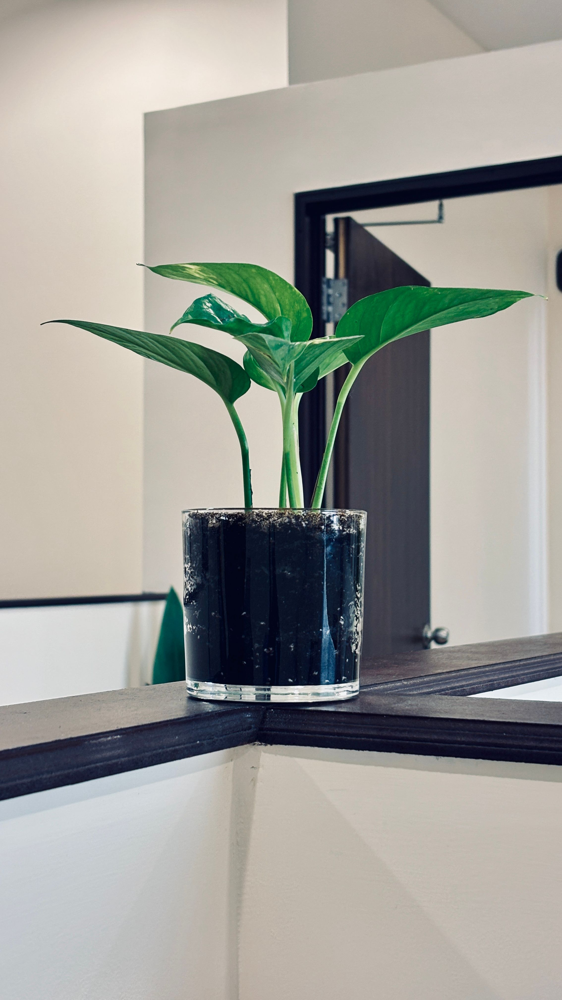
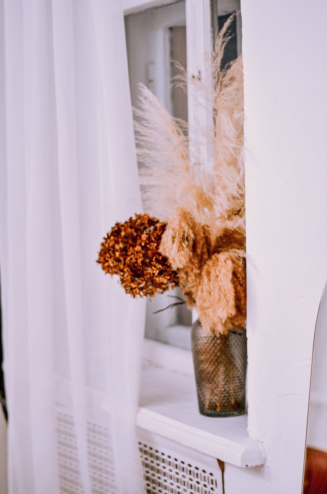
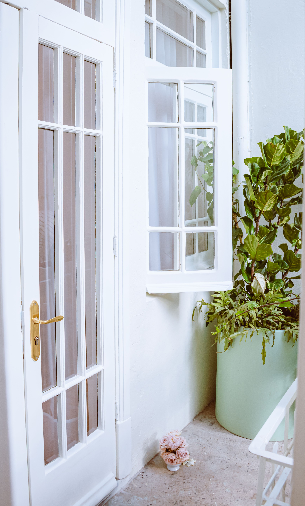

En este artículo
Introducción
Los muebles de madera pueden conservar su belleza durante muchos años cuando la limpieza, la protección frente a la humedad y el mantenimiento se adaptan al acabado y al uso de cada pieza.
Antes de aplicar cualquier recomendación conviene identificar las características concretas del material, la planta o el espacio. Las soluciones más seguras son aquellas que respetan esas diferencias y pueden mantenerse con una rutina realista.
Limpieza correcta sin dañar la madera
La limpieza cotidiana debe ser suave. El polvo acumulado puede parecer inofensivo, pero al mezclarse con humedad o grasa termina formando una película difícil de retirar. Un paño limpio, suave y ligeramente humedecido suele ser suficiente para muchas superficies selladas, siempre que después se seque. Antes de aplicar cualquier producto, conviene identificar si el mueble está barnizado, encerado, aceitado, lacado o conserva un acabado especial. Un limpiador apropiado para una superficie puede resultar inadecuado para otra.
Evita empapar la madera. El exceso de agua puede penetrar por juntas, bordes o pequeñas zonas donde el acabado está desgastado. También es preferible aplicar el producto sobre el paño y no directamente sobre el mueble, salvo que el fabricante indique lo contrario. Para suciedad localizada, trabaja poco a poco y sin frotar con materiales abrasivos.
En mesas y muebles de uso frecuente, retirar migas y líquidos después de utilizarlos reduce la necesidad de limpiezas agresivas. Presta atención a tiradores, esquinas y uniones, donde suele acumularse suciedad. Si una pieza es antigua, valiosa o presenta un acabado desconocido, una restauración profesional puede ser más segura que experimentar con productos domésticos.
Además de estos cuidados, conviene trabajar con una lógica preventiva. Esperar a que aparezca un problema grande suele exigir más tiempo, dinero y esfuerzo que realizar pequeñas revisiones. Observa cambios de color, textura, humedad, estabilidad o comportamiento y compáralos con el estado habitual. Esa atención permite actuar con mayor precisión y evita aplicar soluciones innecesarias.
También es útil conservar las instrucciones de productos, muebles, macetas o materiales utilizados. Cuando llega el momento de limpiar, mantener o sustituir una pieza, esa información evita improvisaciones. Si una recomendación del fabricante contradice un consejo genérico, debe prevalecer la indicación específica para ese producto.
Cómo controlar la humedad y los derrames
La madera responde a los cambios de humedad ambiental: puede expandirse, contraerse o deformarse. Por eso no conviene colocar muebles de interior pegados a paredes con humedad, junto a filtraciones o en lugares donde reciban vapor de manera constante. En cocinas y baños, la ventilación y el secado rápido de salpicaduras son especialmente importantes.
Cuando se derrama agua, café u otro líquido, actúa pronto con un paño absorbente, sin extender la mancha. No apoyes vasos calientes o recipientes húmedos directamente sobre superficies delicadas; posavasos, manteles individuales y salvamanteles reducen marcas y cambios de color. Las macetas también necesitan protección inferior para impedir que la humedad quede atrapada durante horas.

Una vivienda excesivamente seca tampoco es ideal para determinadas piezas, especialmente muebles macizos. No se trata de mantener una cifra perfecta, sino de evitar cambios extremos y repentinos. Alejar el mueble de radiadores, estufas y corrientes muy calientes ayuda a estabilizar las condiciones.
La frecuencia de mantenimiento no debería convertirse en una obligación rígida. Una vivienda con niños, mascotas o uso intenso necesita revisiones distintas de una casa utilizada ocasionalmente; del mismo modo, una planta situada en una ventana soleada no se comporta igual que otra de la misma especie en una habitación fresca. Ajustar la rutina a las condiciones reales es parte de un buen cuidado.
Cuando pruebes un cambio, modifica una variable cada vez siempre que sea posible. Así podrás entender mejor qué produjo una mejora o un problema. Cambiar simultáneamente ubicación, riego, producto de limpieza y exposición hace mucho más difícil identificar la causa de la respuesta observada.
Proteger los muebles del sol y del calor
La luz solar directa puede modificar gradualmente el color de muchas maderas y acabados. El efecto no siempre es negativo, pero puede producir diferencias visibles cuando una parte permanece cubierta y otra recibe sol. Cortinas, persianas o una ligera modificación de la posición del mueble ayudan a reducir la exposición intensa durante las horas críticas.
El calor directo también merece atención. No coloques muebles de interior demasiado cerca de radiadores, chimeneas o salidas de aire caliente. La combinación de calor y baja humedad puede favorecer movimientos de la madera y deteriorar algunos acabados. En una mesa, utiliza siempre protección bajo recipientes calientes.
Si el mueble está cerca de una ventana, observa cómo cambia la luz a lo largo del año. El sol de invierno puede entrar con un ángulo diferente al de verano. Rotar objetos decorativos y no dejar durante años exactamente la misma zona cubierta puede ayudar a que el envejecimiento visual sea más uniforme.
El presupuesto también forma parte del mantenimiento. No siempre el producto más caro es el más adecuado, ni es necesario acumular soluciones especializadas para cada tarea. Prioriza herramientas y productos compatibles con el material o la especie, sigue las dosis indicadas y evita compras impulsivas. Un sistema sencillo que realmente se utiliza suele funcionar mejor que una colección de productos olvidados.
Por último, la seguridad debe estar presente en cualquier tarea. Guarda productos fuera del alcance de niños y animales, ventila cuando corresponda y utiliza protección personal si la etiqueta lo exige. En trabajos que impliquen daños estructurales, electricidad, productos peligrosos o restauraciones delicadas, recurrir a un profesional puede evitar riesgos y daños mayores.

Mantenimiento periódico según el acabado
El mantenimiento profundo depende del acabado. Los muebles aceitados pueden requerir reaplicaciones periódicas; los encerados necesitan productos compatibles; un barniz en buen estado suele requerir principalmente limpieza cuidadosa. No apliques aceite, cera o abrillantador por rutina sin saber qué superficie tienes. Mezclar productos puede dejar residuos, manchas o dificultar futuras reparaciones.
Revisa patas, tornillos, bisagras y cajones. Una pequeña holgura atendida a tiempo evita movimientos que terminen dañando uniones. Los cajones deben deslizar sin forzarlos y las puertas no deberían rozar continuamente. Si detectas carcoma, grietas estructurales, levantamiento importante de chapa o daños por agua, conviene valorar una reparación especializada.
Una vez al año, vaciar el mueble y revisarlo con buena luz permite detectar problemas ocultos. Limpia también la parte trasera y el suelo que queda debajo. El mantenimiento preventivo es menos invasivo que intentar recuperar una pieza después de años de abandono.
Además de estos cuidados, conviene trabajar con una lógica preventiva. Esperar a que aparezca un problema grande suele exigir más tiempo, dinero y esfuerzo que realizar pequeñas revisiones. Observa cambios de color, textura, humedad, estabilidad o comportamiento y compáralos con el estado habitual. Esa atención permite actuar con mayor precisión y evita aplicar soluciones innecesarias.
También es útil conservar las instrucciones de productos, muebles, macetas o materiales utilizados. Cuando llega el momento de limpiar, mantener o sustituir una pieza, esa información evita improvisaciones. Si una recomendación del fabricante contradice un consejo genérico, debe prevalecer la indicación específica para ese producto.
Rutina práctica para conservar los muebles a largo plazo
Una rutina mensual puede comenzar retirando los objetos de las superficies y observando la madera con luz lateral. Así resultan más visibles pequeños arañazos, cambios de brillo, cercos y zonas donde el acabado empieza a desgastarse. Limpia siguiendo el método habitual y comprueba que no haya humedad debajo de protectores, macetas o aparatos decorativos.
Cada cambio de estación es un buen momento para revisar la posición de los muebles respecto al sol y las fuentes de calor. Si una mesa recibe varias horas de radiación directa, considera filtrar la luz. Comprueba también las uniones: una silla que comienza a moverse lateralmente o una puerta que roza son señales que conviene atender pronto.
Cuando aparezca un daño, evita ocultarlo inmediatamente con ceras coloreadas o productos reparadores universales. Primero identifica si se trata de suciedad, desgaste del acabado, arañazo superficial o daño en la propia madera. La reparación correcta depende de esa diferencia. En piezas de valor sentimental o económico, documenta el estado y consulta a un restaurador antes de lijar o decapar.

El cuidado cotidiano también incluye el uso. Levanta los objetos en lugar de arrastrarlos, utiliza protección al escribir sobre mesas delicadas y no sobrecargues estantes. Estas medidas sencillas reducen daños mecánicos que ningún producto de limpieza puede prevenir después.
Errores que conviene evitar
Uno de los errores más frecuentes es aplicar una solución universal sin comprobar las características del caso concreto. Los materiales, las plantas y los espacios responden de manera distinta según su composición, ubicación, uso y estado. Antes de intervenir, identifica esas variables y empieza por la opción menos agresiva.
Otro error es cambiar demasiadas cosas al mismo tiempo. Si modificas productos, ubicación, frecuencia de mantenimiento y condiciones ambientales en una sola jornada, después será difícil saber qué produjo el resultado. Los cambios graduales facilitan evaluar la respuesta y corregir a tiempo.
También conviene evitar el exceso de mantenimiento. Limpiar, regar, pulir, fertilizar o reorganizar más de lo necesario puede ser tan problemático como descuidar. Una rutina basada en observación permite intervenir cuando existe una necesidad real y mantener el equilibrio a largo plazo.
Cuidados especiales según el uso del mueble
Las mesas de comedor soportan un desgaste distinto al de una cómoda o una estantería. En superficies donde se come, utiliza protectores fáciles de limpiar y retira rápidamente restos grasos. Evita cubrir permanentemente la mesa con plásticos que puedan atrapar humedad o reaccionar con determinados acabados. Si utilizas mantel, levántalo periódicamente para limpiar y ventilar la superficie.
En sillas, revisa especialmente las uniones entre patas, asiento y respaldo. Balancearse sobre dos patas aumenta la tensión y puede aflojar ensambles. En estanterías, distribuye el peso de forma razonable y comprueba que los estantes no comiencen a curvarse. Los muebles altos deben instalarse con las medidas de seguridad apropiadas para reducir riesgo de vuelco.
Los muebles situados en casas de vacaciones o habitaciones poco utilizadas también necesitan atención. El polvo, la humedad y los cambios de temperatura continúan actuando aunque nadie use la pieza. Una revisión periódica y cierta circulación de aire ayudan a detectar problemas antes de que se vuelvan visibles desde el exterior.
Preguntas frecuentes
¿Puedo limpiar los muebles de madera con agua?
Puede utilizarse una cantidad mínima en muchas superficies protegidas, pero no conviene empapar la madera. Usa un paño apenas húmedo y seca después, respetando siempre las instrucciones del acabado.
¿Cada cuánto hay que encerar o aceitar un mueble?
No existe una frecuencia universal. Depende del tipo de acabado, el producto utilizado, el desgaste y las indicaciones del fabricante o restaurador.
¿Cómo evitar marcas de vasos y objetos calientes?
Utiliza posavasos, manteles individuales y salvamanteles, y retira rápidamente cualquier humedad que quede atrapada sobre la superficie.
Conclusión
Cuidar y personalizar un espacio funciona mejor cuando las decisiones responden a sus condiciones reales. En el caso de cómo cuidar los muebles de madera y mantenerlos en buen estado, observar antes de actuar, utilizar métodos compatibles y mantener una rutina sencilla permite obtener resultados más duraderos. No es necesario intervenir constantemente: la constancia, la prevención y los ajustes realizados a tiempo suelen ser más eficaces que las soluciones agresivas o improvisadas.